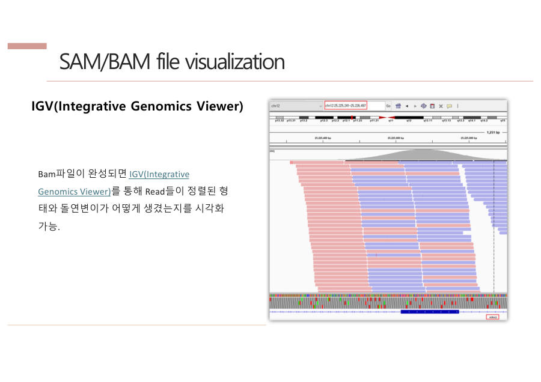

← 보드6장 QC → 얼라인먼트 → BAM · 12/14
IGV — 눈으로 확인하기
IGV(Integrative Genomics Viewer)는 얼라인 결과를 지도 앱처럼 확대·축소하며 보는 프로그램이에요. 숫자만 보지 않고 눈으로 확인하려고 써요.
- 올리는 파일 — 레퍼런스(FASTA + .fai)와 내 결과(sorted BAM + .bai)
- 위쪽 회색 막대 = 자리별 조각 수(depth)
- 화살표 막대 = 조각 하나(방향도 보여요). 빨강·파랑은 정방향·역방향이에요.
- 색칠된 글자 = 레퍼런스와 다른 글자(변이 후보)

외우기 팁
교수님의 로직은 "단계마다 눈(IGV)과 통계(coverage·depth)로 잘 됐는지 확인한다"예요.
시험엔 이렇게 써요
IGV는 레퍼런스(FASTA와 fai)와 정렬된 BAM(sorted BAM과 bai)을 올려 read의 위치, depth(회색 막대), 미스매치(색칠된 염기)를 눈으로 확인하는 시각화 도구이다.
잠깐 확인 — IGV에서 위쪽 회색 막대가 높을수록 무슨 뜻일까요?
그 자리를 읽은 조각이 많다는 뜻, 즉 depth가 높다는 뜻이에요.